Cómo funciona la web por fuera: lo que ve un cliente, cómo busca un producto y cómo os envía una solicitud de presupuesto.
www.maquinasdecoserzafra.es · Noviembre de 2026
Antes de empezar
Este manual explica la web tal como la ve cualquier persona que entra en ella. Sirve para que conozcas bien cómo funciona y puedas ayudar a un cliente que te llame con dudas.
Qué es la web y qué no es
Es un catálogo: todas las máquinas, accesorios y artículos de planchado de la tienda, con sus fotos, sus características y un precio orientativo con IVA incluido.
En la web no se compra ni se paga nada. El cliente prepara una solicitud de presupuesto con los productos que le interesan y os la envía.
Cuando llega una solicitud, recibís un correo y queda guardada en una hoja de Google. Vosotros contactáis con el cliente y, si os ponéis de acuerdo, la venta se cierra en la tienda, por teléfono o por WhatsApp. Eso se explica en la Guía de solicitudes de presupuesto.
Este documento también está en el panel, en Medios → Manuales.
Contenido
1La página de inicio
2Buscar en el catálogo
3La ficha de un producto
4La solicitud de presupuesto
5Contacto, horario y Sobre nosotros
6La web en el móvil
7Preguntas que pueden haceros los clientes
1. La página de inicio
Es lo primero que se ve al entrar en www.maquinasdecoserzafra.es. Arriba siempre está la misma cabecera, en todas las páginas.
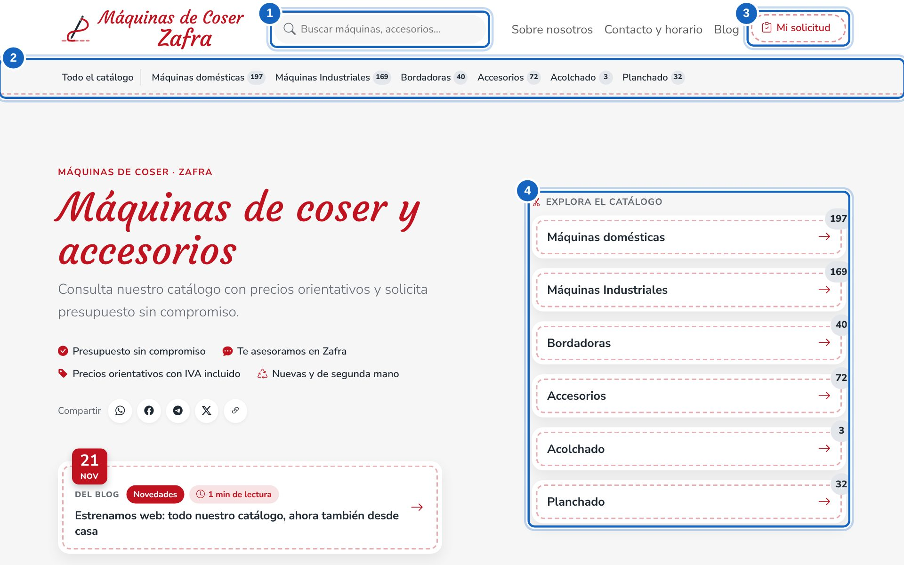
Página de inicio en el ordenador
Buscador. Se escribe lo que se busca (una marca, un modelo, «remalladora»…) y salen sugerencias al momento.
Barra del catálogo. Los tipos de producto con el número de productos de cada uno. Al pulsar uno se abre un panel con sus categorías.
Mi solicitud. La solicitud de presupuesto que el cliente va preparando. Cuando tiene productos, sale un número rojo con cuántos lleva.
Explora el catálogo. Accesos directos a cada tipo de producto.
Más abajo están los productos de la tienda, las últimas entradas del blog y, al final de la página, el pie: dirección, teléfono, WhatsApp, correo, si la tienda está abierta o cerrada en ese momento y los enlaces a los textos legales.
2. Buscar en el catálogo
Hay tres formas de llegar a un producto: por la barra del catálogo, por el buscador o desde la página de una categoría.
1
Por la barra del catálogo
Al pulsar un tipo (por ejemplo, Máquinas domésticas) se abre un panel con sus categorías: mecánicas, electrónicas, remalladoras… Cada una muestra cuántos productos tiene.
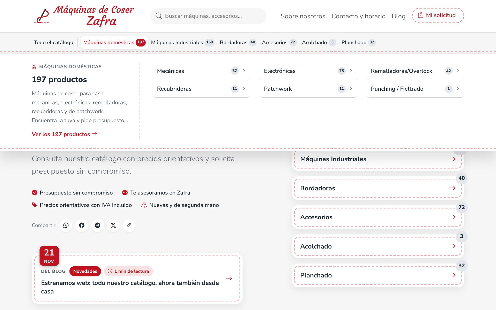
Panel de «Máquinas domésticas» abierto
Si un producto no tiene precio, sale «Precio a consultar». También se puede añadir a la solicitud.
2
Por el buscador
Según se escribe, aparecen los productos que coinciden, con foto y precio. Al pulsar «Ver los … resultados» o la tecla Intro se abre la página con todos los resultados.
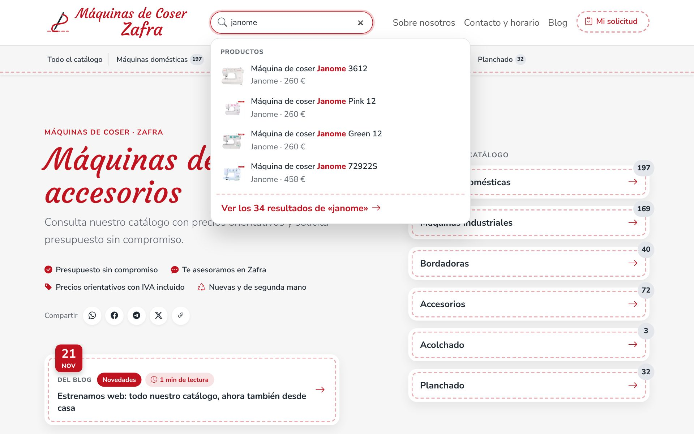
Sugerencias al escribir «janome»
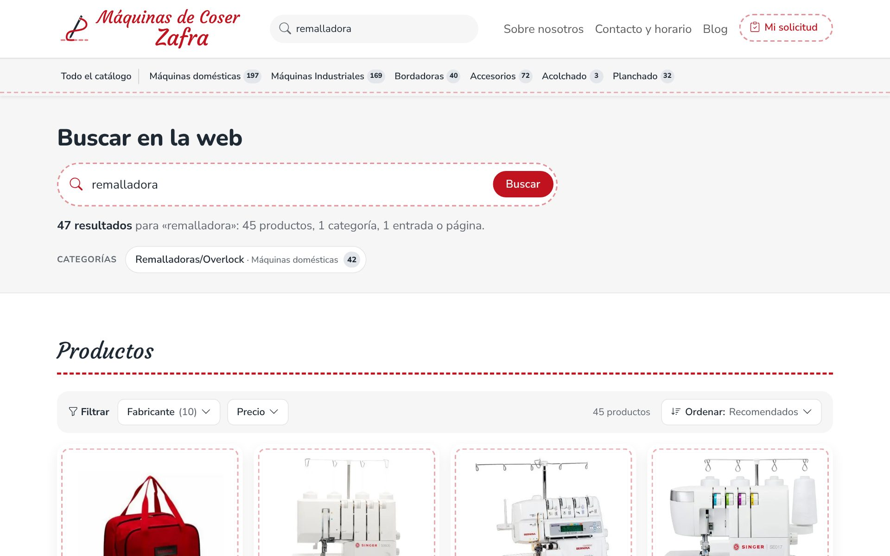
Página de resultados de «remalladora»
3
En la página de una categoría
Muestra todos sus productos en tarjetas, con filtros para encontrar el que se busca.
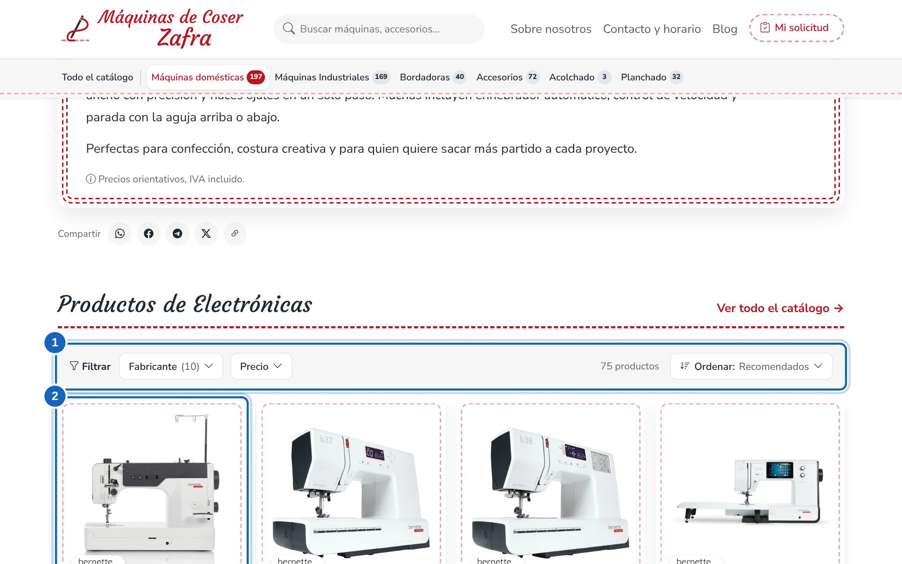
Página de la categoría «Electrónicas»
Filtros: por fabricante, solo de segunda mano, solo en oferta, por precio (desde y hasta) y cómo ordenar (precio, nombre, novedades…).
Tarjeta del producto: foto, marca, nombre y precio. Al pulsarla se abre su ficha.
Botón «+»: añade el producto a la solicitud sin entrar en la ficha.
3. La ficha de un producto
Cada producto tiene su propia página con todo lo necesario para decidir.
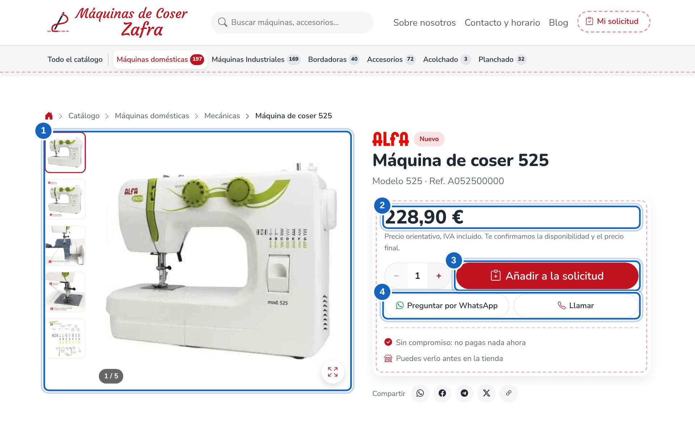
Ficha de la máquina de coser Alfa 525
Fotos. Hasta 5. Se pasan con las miniaturas de la izquierda y se amplían a pantalla completa con el icono de la esquina.
Precio orientativo, con IVA incluido. Si está en oferta, sale el precio anterior tachado, el descuento y hasta cuándo dura.
Unidades y «Añadir a la solicitud». Con − y + se elige cuántas unidades se quieren.
Preguntar por WhatsApp (abre WhatsApp con el nombre del producto ya escrito) y Llamar a la tienda.
Las pestañas de la ficha
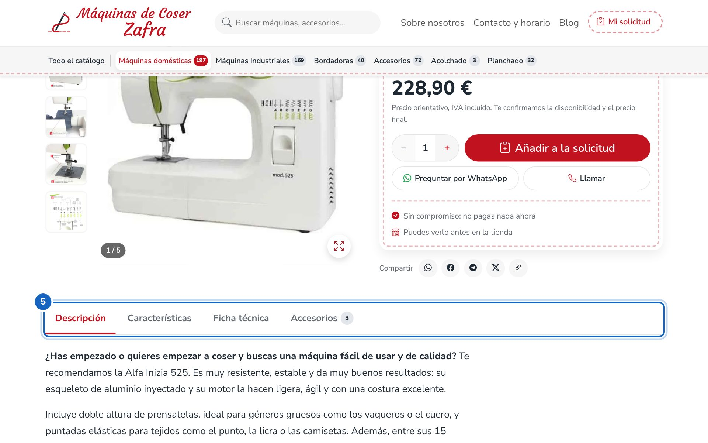
Pestañas de información
Descripción (el texto largo), Características (los puntos clave), Ficha técnica (la tabla de datos) y Accesorios (los accesorios que sirven para esa máquina). En un accesorio, la última pestaña se llama Modelos compatibles.
Después de pulsar «Añadir a la solicitud»
El botón cambia a «Añadir más unidades», aparece «Añadido a tu solicitud. Ver mi solicitud» y el número de «Mi solicitud» en la cabecera sube.
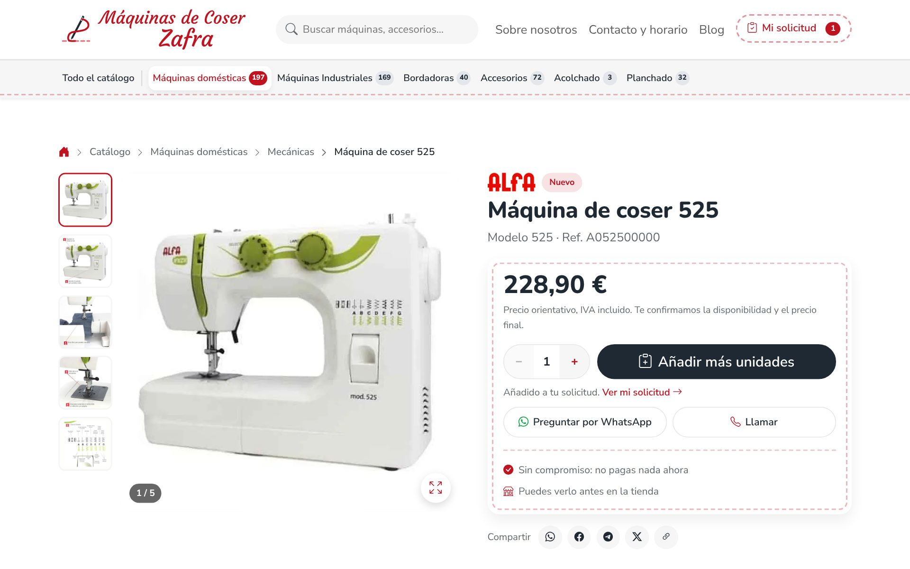
El producto ya está en la solicitud
Máquinas industriales: dos precios
Las máquinas industriales pueden tener dos precios: Completa (con mesa y motor) y Cabezal (solo la máquina). Cada uno tiene su botón «Añadir», y en la solicitud van como dos líneas distintas.
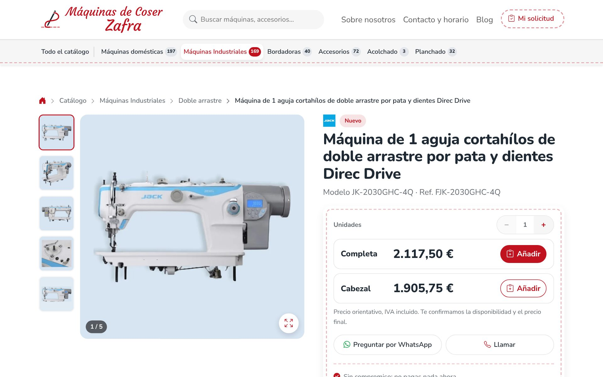
Ficha de una máquina industrial con precio «Completa» y «Cabezal»
4. La solicitud de presupuesto
Es como una «lista» donde el cliente reúne los productos que le interesan. Se abre con el botón Mi solicitud de la cabecera.
1
Revisar los productos
Aparecen todos los productos añadidos, con su precio y el total orientativo.
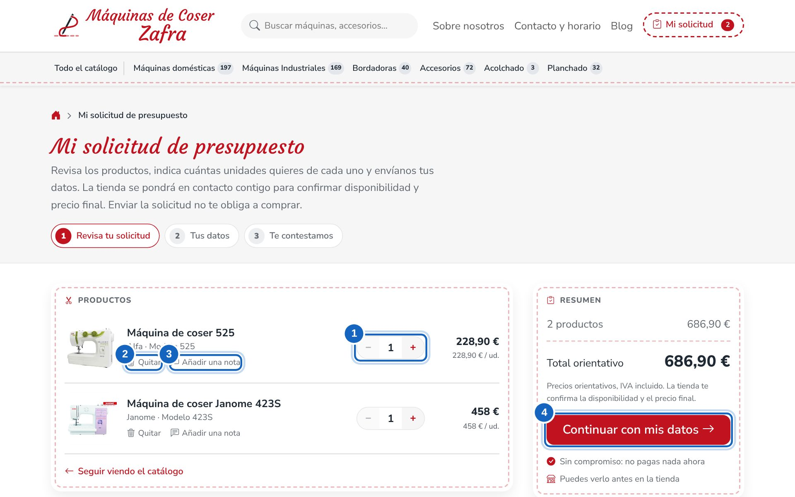
«Mi solicitud de presupuesto» con dos productos
Unidades: se cambian con − y +.
Quitar un producto. Durante unos segundos sale «Deshacer» por si se ha pulsado sin querer.
Añadir una nota a ese producto (por ejemplo, «¿Hacéis demostración?»).
Continuar con mis datos: baja al formulario.
Debajo pueden salir «Accesorios para tus máquinas»: los accesorios compatibles con las máquinas elegidas, por si quiere añadir alguno.
2
Rellenar los datos
El cliente escribe cómo contactarle.
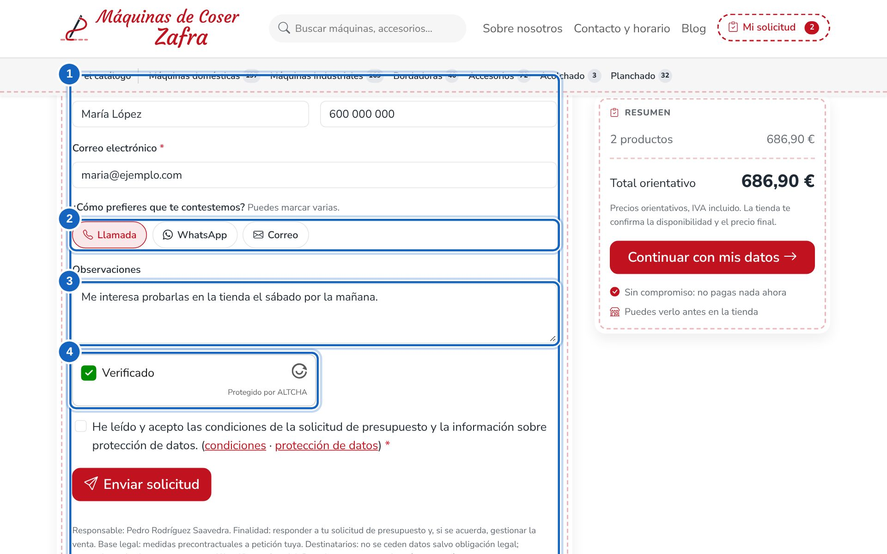
Formulario de datos
Nombre, teléfono y correo: los tres son obligatorios.
¿Cómo prefieres que te contestemos? Llamada, WhatsApp o correo. Puede marcar varias.
Observaciones (opcional): dudas, a qué hora prefiere que le llamen…
«No soy un robot»: se marca la casilla y la web comprueba sola, en unos segundos, que no es un programa automático. No hay que resolver ningún dibujo.
3
Leer y aceptar las condiciones
Al pulsar condiciones o protección de datos se abre una ventana con dos pestañas. Hay que abrir las dos y pulsar «He leído y acepto».
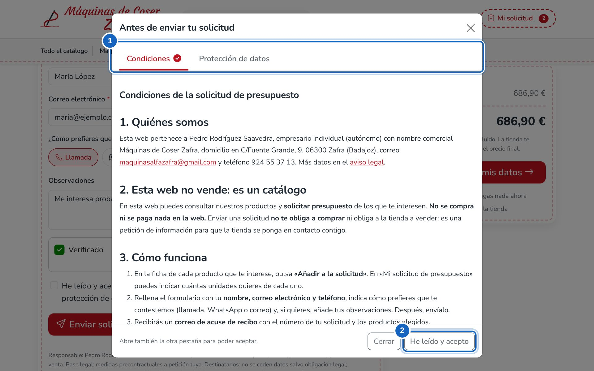
Ventana con las condiciones y la protección de datos
Las dos pestañas: Condiciones y Protección de datos. Cada una se marca con ✓ cuando se ha abierto.
He leído y acepto: marca la casilla de aceptación y cierra la ventana.
4
Enviar
Con la casilla marcada, se pulsa «Enviar solicitud».
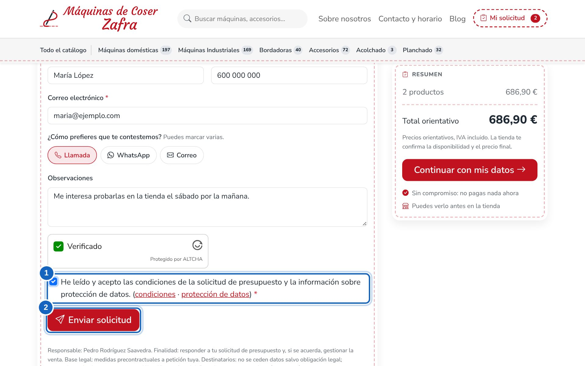
Casilla de aceptación marcada y botón «Enviar solicitud»
La casilla de aceptación, ya marcada.
El botón Enviar solicitud.
5
Solicitud enviada
La web muestra el número de la solicitud (por ejemplo, S-2026-0001) y el cliente recibe un correo con el resumen. Desde ese momento, la solicitud os ha llegado a vosotros.
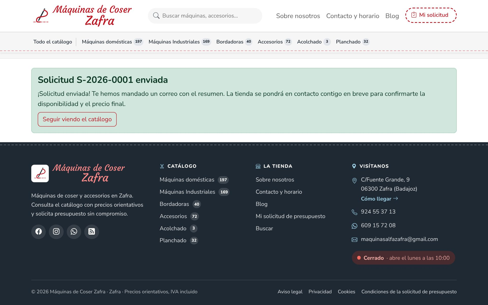
Mensaje que ve el cliente tras enviar
La solicitud se guarda en el navegador del cliente mientras la prepara: puede cerrar la web y seguir otro día en el mismo móvil u ordenador. Si cambia de dispositivo, no la verá allí.
5. Contacto, horario y Sobre nosotros
Contacto y horario
Muestra si la tienda está abierta o cerrada en ese momento (lo calcula sola con el horario), botones para llamar, escribir por WhatsApp o por correo, la dirección con «Cómo llegar», el horario de la semana y el mapa. El mapa de Google solo se carga si el cliente pulsa «Ver el mapa».
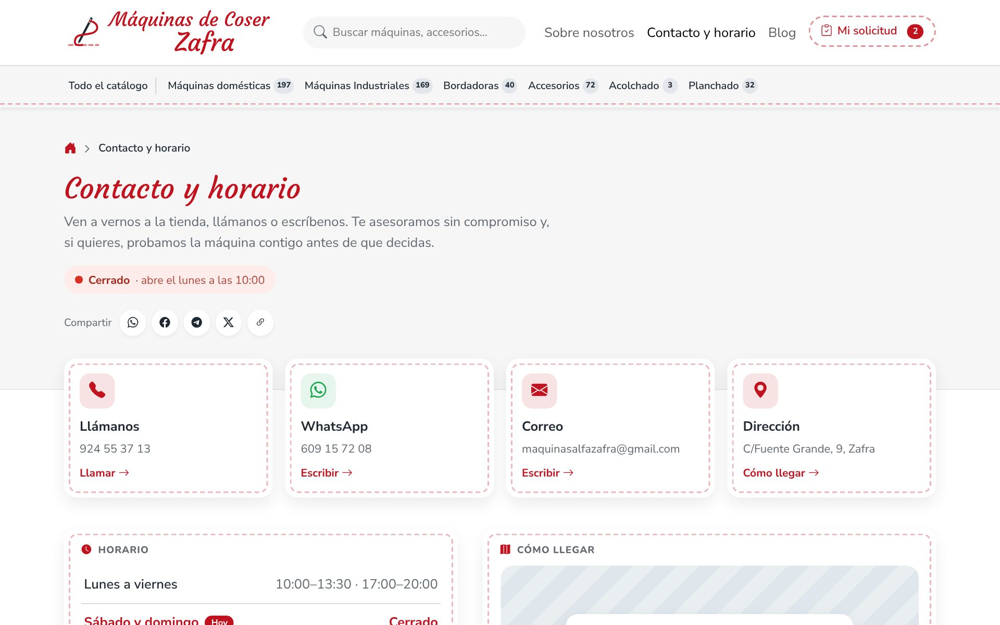
Página «Contacto y horario»
Sobre nosotros
Presenta la tienda: quiénes sois, desde cuándo, qué hacéis (venta, segunda mano, taller, asesoramiento), por qué comprar con vosotros, vuestra historia y las marcas con las que trabajáis.
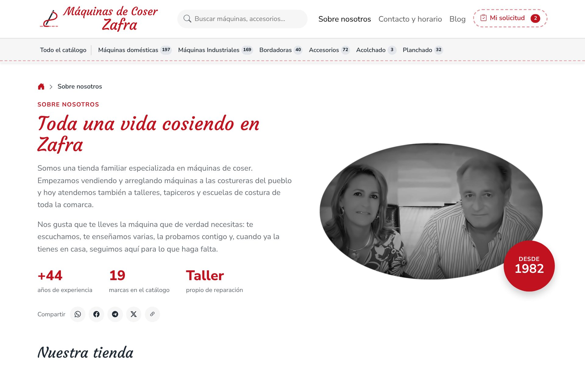
Página «Sobre nosotros»
Todos estos textos y datos se cambian desde el panel (ver el Manual del panel).
6. La web en el móvil
La web se adapta sola a la pantalla del móvil. Funciona igual; solo cambia cómo se colocan las cosas.
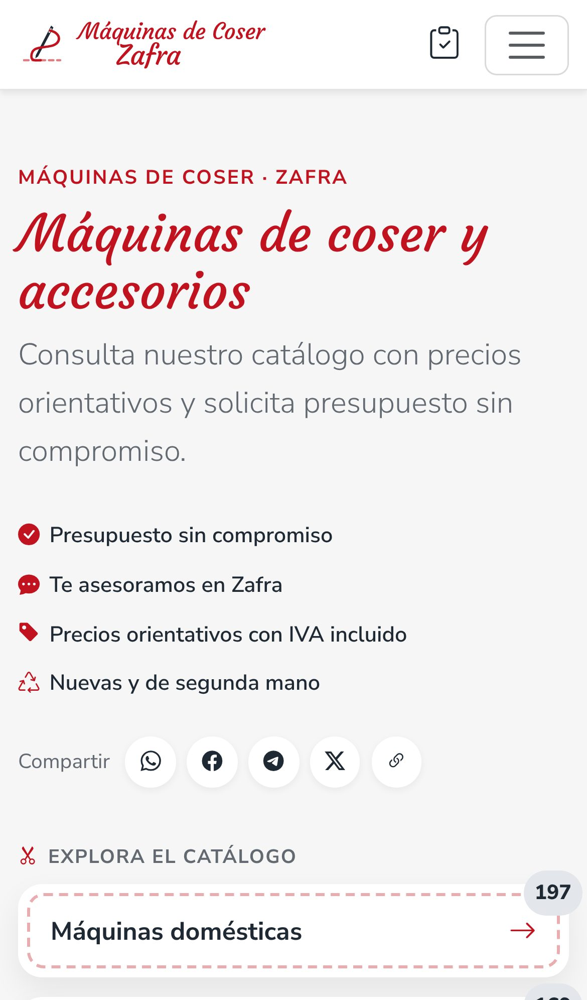
Inicio
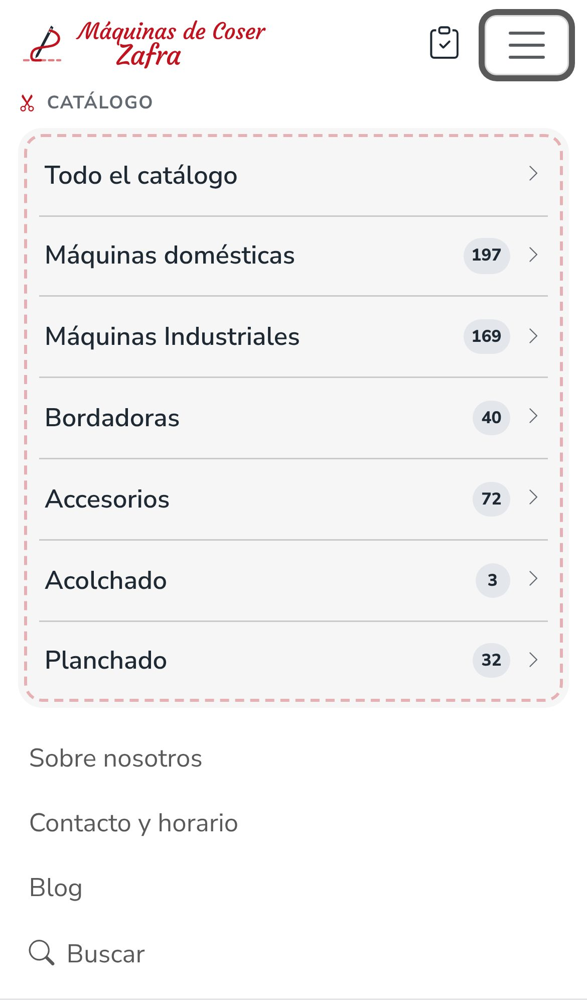
Menú (botón de las tres rayas)
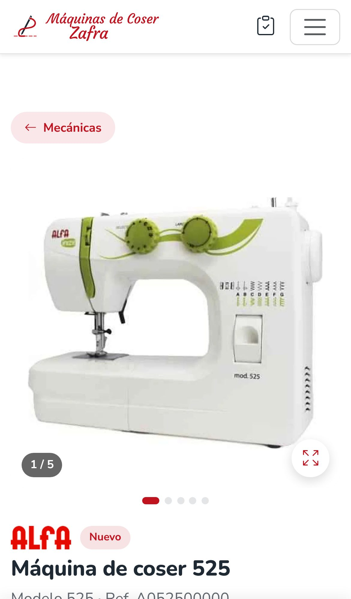
Ficha de producto
El menú se abre con el botón de las tres rayas, arriba a la derecha. Ahí está todo el catálogo, Sobre nosotros, Contacto, el Blog y el buscador.
El icono de la tablilla, junto a las tres rayas, abre Mi solicitud.
En la ficha, las fotos se pasan deslizando el dedo. Al bajar, aparece una barra fija abajo con el precio y el botón «Añadir a la solicitud».
7. Preguntas que pueden haceros los clientes
Pregunta
Respuesta
¿Puedo comprar o pagar en la web?
No. En la web se pide presupuesto sin compromiso; la venta se acuerda con la tienda.
¿Los precios son definitivos?
Son orientativos y con IVA incluido. La tienda confirma el precio final y la disponibilidad.
¿Me respetáis el precio de oferta?
Sí, si la solicitud se envió mientras la oferta estaba en vigor, aunque la venta se cierre después.
He enviado la solicitud y no me ha llegado el correo.
Que mire en la carpeta de correo no deseado (spam). La solicitud os ha llegado igualmente; podéis decirle el número si os lo pide.
Añadí productos y ahora no los veo.
La solicitud se guarda en el móvil u ordenador donde la preparó. En otro dispositivo, o si borró los datos del navegador, hay que volver a añadirlos.
¿Qué hacéis con mis datos?
Solo se usan para contestar a su solicitud. Está explicado en «Privacidad», en el pie de la web.
La casilla «No soy un robot» no se marca.
Que espere unos segundos o recargue la página. Si sigue sin funcionar, que os llame o escriba por WhatsApp.